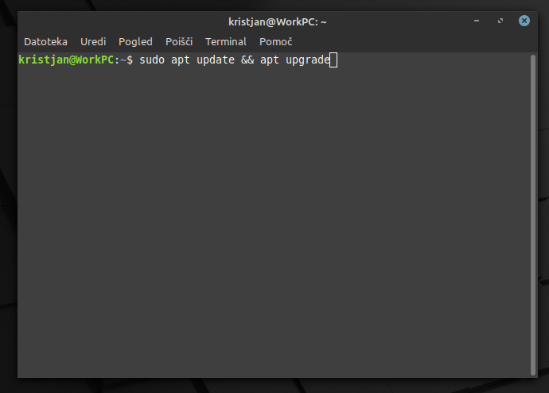
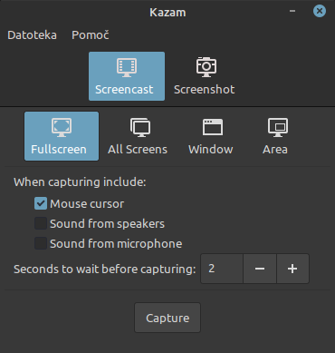

Naslednji program, ki si ga bomo ogledali se imenuje Kazam. Je odprto kodni program žal pa je na voljo zgolj za operacijski sistem GNU/Linux. Program lahko namestimo različno glede na distribucijo in namizno okolje, ki ga uporabljamo. V vseh primerih pa je namestitev mogoča iz terminala z ukazom (npr. Debian in Debina-based distribucije: sudo apt install kazam).
Slika 17: Zajem zaslona s Kazam

Vir: Lastni
Po namestitvi in zagonu programa se pojavi okence, ki spominja na gnome-screenshot, le da ima več funkcij. Kot prvo imamo na izbiro kaj želimo posneti, zaslonski posnetek ali zaslonski videoposnetek. V naslednji vrstici izbiramo kaj želimo posneti. Program omogoča snemanje celotnega zaslona, snemanje vseh zaslonov, snemanje izbranega okna, ter snemanje izbranega območja zaslona. Ko izberemo snemanje okna ali območja se zaslon zatemni, nakar izberemo želeno okno, območje ali pa postopek prekinemo s klikom na esc. Svojo izbiro potrdimo s tipko Enter. Zadnji sklop nastavitev, pred začetkom snemanja nam daje izbiro, če želimo posneti kazalko miške, vhodni zvok in/ali izhodni zvok. Prav tako pa v tem sklopu določimo časovnik do začetka snemanja po pritisku gumba Capture. Za naprednejše uporabnike pa lahko s klikom na meni datoteka > nastavitve izbiramo se hitrost sličic in format s katerim želimo shraniti posnetek. Snemanje končamo s pritiskom na kombinacijo tipk SUPER + Ctrl + F.
Slika 18: Kazam

Vir: Lastni
Po končanem snemanju se odpre okno z dialogom, ki nas sprašuje če želimo datoteko takoj shraniti ali pa želimo posnetek obdelati z zunanjim orodjem.
Sam program je uporabniku zelo prijazen, ter omogoča več funkcij kot pa PowerPoint. Problem na katerega lahko oseba naleti je da ne najde ustrezne dokumentacije za uporabo tega programa. Če naletite na to težavo se lahko vedno obrnete na uradno spletno stran, ki jo najdete v zavihku pomoč, ter na uradni github strani https://github.com/hzbd/kazam pod datoteko Readme.